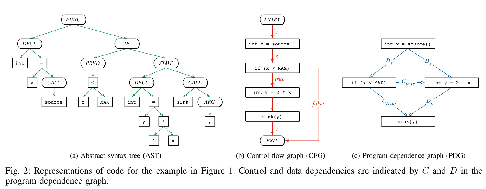
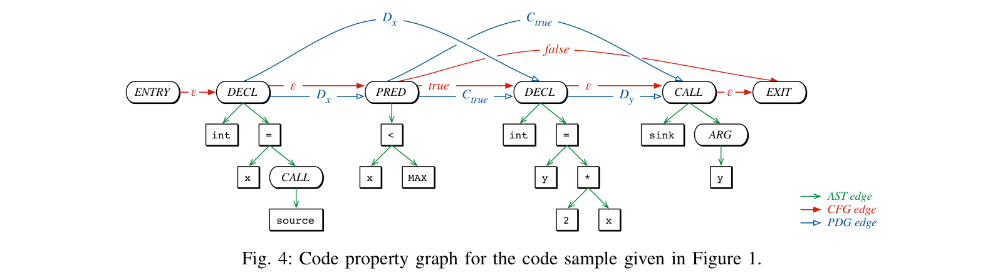
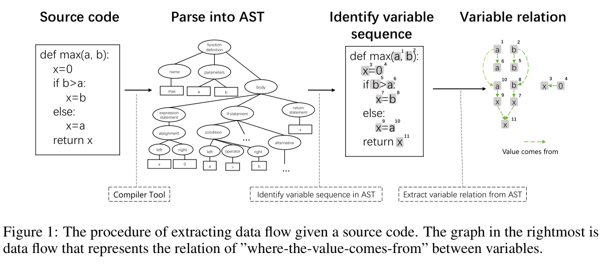
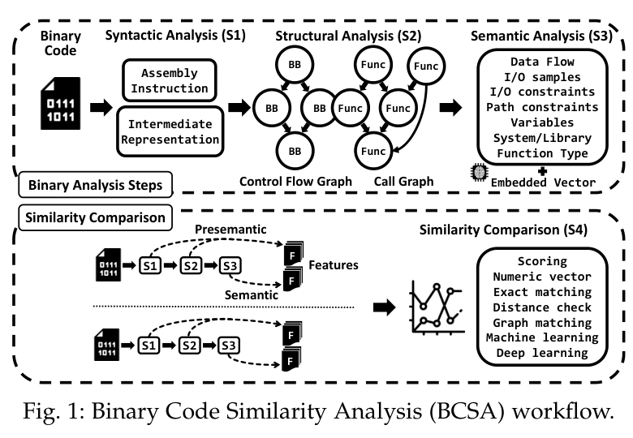
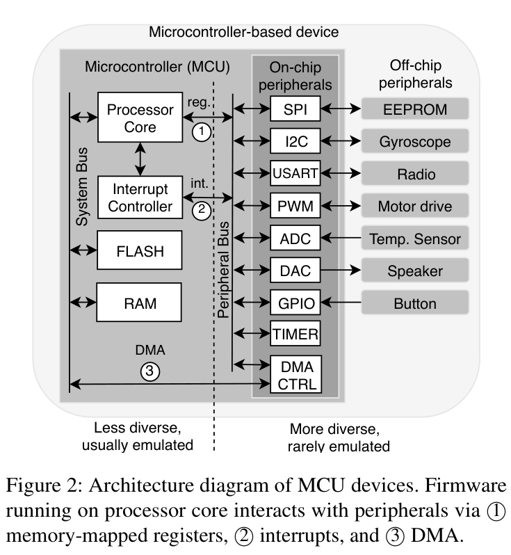
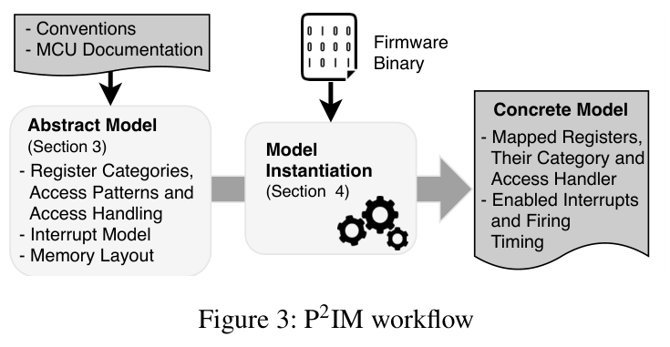
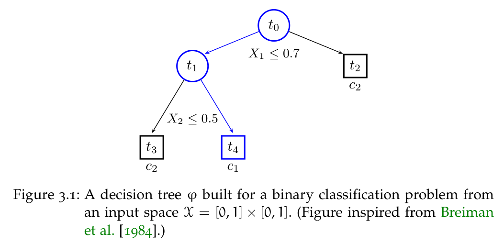

第二章实验原理：论文原图参考
2026-10-18核实。6份论文／学位论文，8张带原图题的参考图。图号为原论文图号，页码按包含封面的PDF物理页计数。
这些图用于参考表达方式，未插入正文。本文拟采用图的具体内容见第二章F01—F06注释及说明索引。原图的实现与结果均不代表本工具。
R01 AST、CFG与PDG的三种代码表示
F01／2.2.1 源码语法、已知版本与配置依赖 · 原图 2 · PDF 第 3 页

Fabian Yamaguchi, Nico Golde, Daniel Arp, Konrad Rieck (2014). Modeling and Discovering Vulnerabilities with Code Property Graphs.
原始来源 · 本地论文PDF
借鉴内容：解释语法、控制流和数据依赖分别保留什么信息；适合作为三栏布局参考。
使用边界：原图是通用代码例子，未包含本文的密码接口、构建条件和业务依赖。
R02 合并AST、CFG与PDG的代码属性图
F01／2.2.1（优先于R01） · 原图 4 · PDF 第 5 页

Fabian Yamaguchi, Nico Golde, Daniel Arp, Konrad Rieck (2014). Modeling and Discovering Vulnerabilities with Code Property Graphs.
原始来源 · 本地论文PDF
借鉴内容：共享节点上叠加不同类型的边，直接支持CPG原理说明。
使用边界：原论文研究漏洞发现；本文借鉴图表示，不把漏洞检测能力当作算法识别成绩。配置约束属于本文拟增加部分。
R03 从源码、AST到变量数据流的提取
F01备选／F02 数据依赖示意参考 · 原图 1 · PDF 第 3 页

Daya Guo et al. (2020/2021). GraphCodeBERT: Pre-training Code Representations with Data Flow.
原始来源 · 本地论文PDF
借鉴内容：展示变量不同出现位置之间的取值来源，适合借鉴“代码到依赖”的图式。
使用边界：原图输入是Python源码，既不是二进制IR图，也不是本文的掩码匹配或分支合流算法；GraphCodeBERT尚未接入。
R04 二进制分析的语法、结构与语义层次
F02／2.2.3 运算依赖与有界语义判定 · 原图 1 · PDF 第 3 页

Dongkwan Kim, Eunsoo Kim, Sang Kil Cha, Sooel Son, Yongdae Kim (2020). Revisiting Binary Code Similarity Analysis using Interpretable Feature Engineering and Lessons Learned.
原始来源 · 本地论文PDF
借鉴内容：只借鉴分析层次组织；本文最终图应重点画同源状态依赖与保守合流。
使用边界：这是二进制相似性研究的分类图，不是本文算法流程，也没有直接给出本文的unknown合流规则。
R05 MCU处理器与外设的交互边界
F03／2.3.1 镜像提取与固件重托管 · 原图 2 · PDF 第 4 页

Bo Feng, Alejandro Mera, Long Lu (2020). P2IM: Scalable and Hardware-independent Firmware Testing via Automatic Peripheral Interface Modeling.
原始来源 · 本地论文PDF
借鉴内容：解释只仿真处理器为何不足以继续执行固件，以及外设接口模型的作用。
使用边界：图中列出MMIO、中断和DMA三类接口；P2IM正文明确将DMA排除在其处理范围之外，不能据该图宣称P2IM完整建模DMA。本文重托管尚为方案。
R06 P2IM抽象模型、实例化与具体模型
F03／2.3.1（首选布局） · 原图 3 · PDF 第 5 页

Bo Feng, Alejandro Mera, Long Lu (2020). P2IM: Scalable and Hardware-independent Firmware Testing via Automatic Peripheral Interface Modeling.
原始来源 · 本地论文PDF
借鉴内容：展示外设模型如何结合固件形成可执行条件，适合说明重托管机制。
使用边界：原方法面向固件测试；本文应自行增加密码事件和业务任务的关联，不能把原文覆盖率或测试结果作为本文结果。
R07 决策树的特征分裂与叶节点分类
F04／2.4.1 随机森林的函数判定与文件聚合 · 原图 3.1 · PDF 第 40 页

Gilles Louppe (2014). Understanding Random Forests: From Theory to Practice.
原始来源 · 本地论文PDF
借鉴内容：可借鉴树节点和分支的画法；本文应扩展为多树叶节点比例平均，再按文件取最大值。
使用边界：原图仅为单棵树的硬类别示例，不是森林架构图，也没有文件级聚合；原图题自身注明受Breiman等1984年著作启发。
R08 GraphRAG图索引、社区摘要和全局回答流程
F05／2.4.2 GraphRAG 的依赖检索与大模型解释 · 原图 1 · PDF 第 4 页

Darren Edge et al. (2024). From Local to Global: A GraphRAG Approach to Query-Focused Summarization.
原始来源 · 本地论文PDF
借鉴内容：直接对应图索引、社区摘要和生成回答机制，是GraphRAG配图的主要论文依据。
使用边界：原图针对文档问答；本文增加资产类型、配置版本约束和依赖路径检索。程序关系应来自已核验证据，不能把LLM抽取的关系直接视为确定事实。